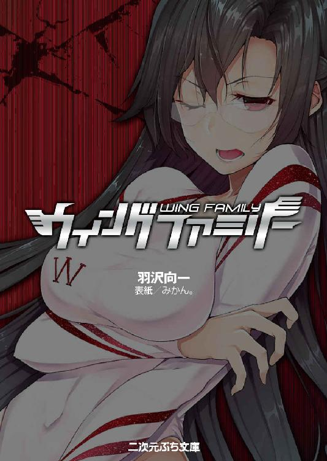

| ウィングファミリー (二次元ぷち文庫) | |
| 羽沢向一 | |
| 株式会社キルタイムコミュニケーション (2017) | |

当ファイルは、モバイル二次元ドリーム『ウィングファミリー』に基づいて作成しております。
※本作品の全部あるいは一部を無断で複製・転載・配信・送信したり、ホームページ上に転載することを禁止します。本作品の内容を無断で改変、改ざん等行うことも禁止します。また、有償・無償にかかわらず本作品を第三者に譲渡することはできません。
※本作品は電子書籍配信用に再編集しております。
登場人物紹介
白鳥羽月
豊満な肉体を持つ未亡人。白いレオタードを身につけ、ウィングファミリーのリーダー・スワンとして活躍する。
白鳥鴎
羽月の娘。母譲りの超能力に目覚めたばかりの、健康的で活発な少女。
少年
謎のロボット軍団に追われていたところを羽月に助けられた少年。
キュン。と、頭の中で桃色の警報が鳴る。
「んっ！」
白鳥羽月は思わず口につけたコーヒーカップを震わせ、ブラックの液体を数滴テーブルにこぼした。
「うくっ！」
白鳥鴎はたまらず咥えたストローに熱い息を吹き込み、メロンソーダをぶくぶくと泡立たせる。
「ふう......」
「んん......」
母娘はまた同時に声と息が入り混じった喘ぎを口から吐き、両肩をびくっとすくめた。二人そろって、頬がわずかに朱に染まる。
「くっ......やだなあ、母さん。こんなところで起きちゃうなんて」
「恥ずかしいけれど、しかたないわ。鴎ちゃん」
母娘は銀座の晴海通りに面する喫茶店の、四人がけのテーブルに向かいあって座っているのだ。周囲の客、特に男たちの注目が、自分たちに集まっているのではと思うと、羞恥でいよいよ顔が赤くなる。
「これは近くで、なにかの危険があるという警報なのよ。少しだけがまんして、ああ......」
「いよいよボクもデビューできるんだ、はうっ......」
鴎と羽月は囁き交わしながら、眉をよせて、苦しげに吐息を洩らした。
二人の脳の奥でチリチリと危険信号が鳴りつづける。警告の響きは神経を伝わり、肉体のそこかしこを熱していく。胸が張りを増して、四つの乳首が硬くなりはじめた。腰の奥も、じりじりと疼きだしている。
こらえようとする意思に反して、つい悩ましい声音が口から溢れてしまう。
たとえ黙って座っていても、よく目立つ二人だった。
羽月は三十六歳。女性弁護士か大病院の女医をイメージさせる知的で硬質な美貌が、ていねいにまとめた艶やかな黒髪によく映えている。
一見男を敬遠させる顔つきだが、落ち着いたダークブルーのツーピースの胸は豊かに盛り上がり、ウェストは気持ちよく引き締まっていた。そして、たっぷりと量感のあるまろやかな尻が、無意識のうちに火であぶられているように椅子の上でくねっている。
鴎は十代後半。若さがはじけるボーイッシュな美少女だ。ピクンピクンと背筋が震えるたびに、自分で無造作に切ったような短髪がつんつんと四方八方へ跳ねる。
ノースリーブのシャツとデニムのショートパンツからのびる手足は、ほどよく日焼けして、しなやかな猫科の獣を思わせた。まだ子供らしさが残る体型だが、熱い吐息とともに上下する胸は、未来の成長を期待させるふくらみを見せている。
二人は身体の内側からの熱に責め立てられながら、そっと店内に目を配った。
「はあ、母さん、店の中はなにもないみたいだ」
「そうね。うっんっ、店の外を調べてみましょう」
「そんなあ。これ以上がまんしたら、ボクはおかしくなっちゃう」
文句を言いながらも、鴎は股間を刺激しないように注意して、椅子から立ち上がった。その間にも、身体を侵食する熱い疼きは激しさを増す。ショートパンツの中で、パンティがしっとりと湿りはじめた。
羽月も状態は変わらない。たたでさえ窮屈な胸が動くたびにブラジャーにこすれて、たまらない快感を生む。母親である自分だけでなく娘まで、衆人環視の中で淫らな欲求に責められている。身悶えして耐えねばならない状況に、羽月は情けなくてしかたなかった。娘をこんな身体に生んだのは、自分なのだから。
（鴎は能力が目覚めたばかりだから、まだ身体が慣れていない。わたし以上につらいはずだわ。わたしがしっかりしなくては）
娘の身を案じながらも、羽月が主婦の経済感覚で残ったコーヒーをひと息に飲み干した。カップを皿に置こうとしたとき、空気がビリビリと震動した。喫茶店の壁と天井が大きく揺らぐ。
「地震？ 警告は地震だったの？」
「違う。母さん、あれ！」
一瞬後、大通りに自動車並みのサイズの黒い物体が墜落した。凄まじい破壊音を轟かせ、アスファルトを陥没させた物体は、バウンドして喫茶店の大きな窓ガラスを砕き、店内になだれ込んでくる。無人のテーブルや椅子をなぎ倒し、押しつぶし、床板をけずりとってようやく停止したのは、金属製の大きな人型のものだった。
店内の人々が注視する中で、人型の焼けこげた胴体の前面装甲が左右に割れた。開放された胴体の中から、小さな影が転げ落ち、床に横たわる。
少年だ。
まるで囚人が着せられるような粗末な灰色の服を身につけた、まだ十代の少年。意識のない顔は目を見張るほど端整で、ヨーロッパの古典絵画の王子の肖像のように愛らしい。その容貌に反して、少年の服の破れからは、生々しい傷がいくつものぞいていた。
美しくも痛々しい幼い姿に、客たちが近寄ろうとしたとき、華奢な身体の上に大きな影が落ちた。人々が悲鳴を上げ、喫茶店の奥へと駆けもどっていく。
少年が乗っていたものと同型の、高さ三メートルあまりの人型ロボット集団が、つぎつぎと道路に着地してくるのだから。
「標的ヲ補足。消去ヲ実行スル」
人造音声が機械から響いた。先頭のロボットがあきらかに軍事用の武骨な巨体を黒光りさせ、右腕を少年へ向けた。腕に装着した機関銃が、意識のない頭部にロックされる。誰もが、謎の少年に絶対確実な死が訪れると思われた。
「やめなさい！」
するどい声とともに、白い影が店内に倒れたロボットを飛び越え、矢のように少年の前に降り立った。
純白のアイマスクで顔を隠した白鳥羽月は、輝くばかりの白いレオタードにつつまれた豊満な胸を張って、ロボットを叱責する。重たげな巨乳がふるんと揺れ、右胸に描かれた真紅のＷの文字がたわんだ。
「あなたたちが何者であろうと、無抵抗の者に兵器を向けるなど、ウィングファミリーのリーダーであるスワンが許しません」
スーパーヒロインの出現に、店内でいっせいに歓声が上がる。ウィングファミリーはスワンをリーダーとする、三人組の正義のスーパーチームだ。警察の手におえない凶悪な犯罪者を捕らえ、火事や事故で人命救助をして、人々の称賛を浴びている。
湧き上がった声援も、容赦のない銃撃音にかき消された。
銃口が火を噴き、腕から連続して薬莢が排出される。アフリカ象でさえ数秒でミンチに変える鋼鉄の雨が、ハイレグレオタードと白いブーツだけを身につけたスワンの妖艶な肉体に降り注ぐ。
だが、防弾機能などありえない薄い布の表面で、弾丸が静止した。いや、素肌のままの顔やなめらかな腕やむっちりとした腿の上でも、銃弾が動きを止めている。よくよく目を近づけて観察すれば、皮膚から五ミリほどの隙間を空けて、弾丸の先端が空中で止まっているのがわかった。
羽月は身体の周囲五ミリの空間に、一種のテレキネシスのフィールドを展開しているのだ。いわば全身にテレキネシスの薄膜をまとっている状態だ。
この精神力のフィールドは運動エネルギーを操作する。いまも高速で飛来してきた弾丸の運動エネルギーを吸収していた。完全にエネルギーを失った殺人兵器が、無害な鉄の小片と化して、すべて床に落ちた。
超能力を振るいながら、羽月は内心で胸をなでおろしていた。こうして力を使っていると、しばらくは肉体の疼き、セックスへの渇望を抑えられる。だが、長くはもたない。そのときのコンディションにもよるが、ある程度の時間がすぎると、反動でより大きな欲情と快感が襲ってくる。
（早く、すませなければ、また......）
「妨害者ハ〈特異能力者〉スワント確認。設定ヲ変更」
ロボットの言葉が終わる前に、スワンが跳躍した。もともと彼女はオリンピックのあらゆる競技の金メダリスト級の運動能力をあわせ持っている。さらにテレキネシス・フィールドで爆発的な加速をかけての突進だ。
「罰を受けなさい！」
握った拳が、正確には拳の周囲のテレキネシス・フィールドが、ロボットの胸にぶちあたった。鋼鉄の装甲が粘土のようにぐしゃりとへこんだ。
ロボットの巨体が突風にあおられた発泡スチロール製のはりぼてのように吹き飛び、背後の同型機と激突して、ノイズをまきちらしながら機能を停止する。
スワンは空中で軽々と身体をひねり、ブーツのかかとを別のロボットの頭部に落とす。金属の頭が砕け、そのまま胴体の半ばまで左右に裂けた。
路面に降りたスワンを、五体のロボットが包囲して、鋼鉄のワイヤーを同時に射出した。スワンの胴体にワイヤーが巻きつき、緊縛する。
「無駄ですわ」
エンジン全開のパワーショベルも拘束するはずのワイヤーを、スワンは両手でつかみ、強く振り回した。もちろん本来の腕力を、テレキネシスで何倍にも増幅している。合計何トンにもなる五つの鋼鉄の巨体が空中に舞い、頭から別のロボットたちにたたきつけられて、スクラップの山を築いた。
「やっほー！ ボクの相手もしてくれよー！」
新たな声に反応して、数体のロボットが方向を変えた。
通行人のなくなった歩道に、しなやかな人影がひとつ。両手を腰に置いて、すっくと立っている。胸の下ですそを切ったライトブルーのピチピチのＴシャツ。同じく明るい青の地に、レモン色のＷを描いたピチピチのスパッツという、セクシーで健康的ないでたちだ。
Ｗのマークはウィングファミリーのシンボルだった。だが、この青いコスチュームは、まだ誰も見たことがない。
「妨害者ノ正体不明」
ロボットの言葉に、鴎はミラーシェードのサングラスをきらめかせて宣言する。
「ボクの名はシーガル！ ウィングファミリーの四番目の美女だ。おまえたち、喜べよ。ボクのデビューゲームの相手になれるんだからな！」
シーガルは腰のベルトに下げたホルスターから、西部劇のガンマンのように黒い機械を抜いた。
スタンガンだ。
一般向けの護身用の道具を、ロボットは軍事兵器である自分たちに効果があるとは認めなかった。防御体勢を取らずに、腕の機関銃やロケットランチャーをシーガルへ向ける。
シーガルはスタンガンをくるくると回転させ、スイッチを入れた。電極の間でバチバチと青い電光が咲く。
起動したスタンガンを、シーガルは敵ではなく、自分の首筋に押しつけた。
「かーっ！ きくうっ！」
機関銃がいっせいに吠え、小型ロケットが発射される。対して、シーガルの左手が前に差し出された。五本の指先から青い稲妻がほとばしり、円の形を作った。
空中に浮かぶ青い円形の盾が、数えきれない銃弾と爆発をすべてさえぎった。
これが一ヶ月前に目覚めた、鴎の超能力だ。体内に吸収した電気をエネルギー源として、自分のイメージ通りの形に物体を造り出す。ただしこの擬似的な固体は、短時間で元のエネルギーとなって消失してしまうのだが。
「こっちの攻撃ターンだな」
シーガルは両足からエネルギーを放出して、ブーツの下に青いバネを造った。
たわんだ二個のバネが一気に反発して、シーガルの身体がビヨヨヨヨヨ─────ンと大きくジャンプする。まるっきりギャグアニメだが、シーガルのイメージに従って造られているので、これでいいのだ。
ロボットの頭上の空中で、シーガルは抜群のバランス感覚を見せた。母親ゆずりの最高の身体能力を発揮しながら、両手の稲妻をバカみたいに大きなトゲつきの青い鉄球に変化させる。
「おりゃ！」
ドガッ！ と派手な音をたて、鉄球の下敷きになったロボットがぺちゃんこになる。
ぴょんぴょんとアクロバットさながらのジャンプをくりかえし、シーガルは稲妻でいくつもの爆弾を造った。といっても髑髏を描いた丸い玉に縄の導火線がついた、漫画によく出てくる爆弾だ。
「ほらほら、デビュー記念のプレゼントを配っちゃうぞ」
ロボットたちのまわりにばらまかれた爆弾が同時に爆発する。本物の火薬が発火しているのではなく、疑似爆弾が爆発的な勢いでエネルギーを解放しているのだ。荒れ狂う衝撃が、合金の巨体をバラバラの鉄くずに変えていく。
母娘は戦闘ロボットを一掃すると、スワンが問題の少年を抱き上げた。
少年の口が動き、かすかな声が洩れる。
「......ぼ、ぼくは......」
「なんなの？ きみは、どうしてロボットなんかに追われていたの？」
「......逃げ、て......ダ......ク......ネス......ト」
スワンの顔色が変わった。
白鳥家の羽月のベッドに、少年は寝かされていた。
少年を連れて急いで帰宅したので、羽月はまだスワンのコスチュームに上着をはおったまま、ベッドの脇に座っている。情報収集のためにつけたポータブルテレビでは、銀座での事件現場から中継され、リポーターがウィングファミリーに新メンバーが加わったことを懸命にしゃべっていた。通行人がデジタルカメラで撮影した手ぶれしまくりの映像で、青いコスチュームがひらひらと踊っている。
当の鴎は二階の自分の部屋に駆け上がっていった。初めての実戦の後、どっと襲ってきた身体の疼きを、ひとりで解消しにいったのだ。いまごろは夢中になって指を動かし、オナニーをしているだろう。
羽月もまた、自家用車を運転中から全身がほてってしかたがなかった。いまも、知らないうちに手がレオタードの胸やハイレグの股間にのびてしまう。
「はあっ！」
濡れた布地に指先が触れたとたん、甘美な電流が腰の奥から脊髄を駆け抜ける。
「ああ、いけない......この子が目覚めるかもしれないのに......」
そう自身を戒めても、また手が勝手に太腿の間に忍びこみ、そのたびに羽月は熟れた息をつくという行為をくりかえしていた。ついつい脳裏に、同じ屋根の下で女の快楽に耽っている娘の姿が思い浮かんでしまい、さらに豊満な肉体を燃え上がらせた。
「うっ......あ......もう、限界だわ......本当に、んっ、おかしくなる......」
意を決して、羽月は眠る少年に背を向けた。今度は意識して、両手の掌で自分の胸をそっと被う。少女のころからの慰め方だ。掌の中央に、硬くなった乳首が当る。ゆっくりと円を描くように、やさしく両手を動かした。
一気に二つの肉球の内部で炎が大きくなった。薄い布の内側で、女の肉がきゅっと引き締まり、熱い蜜がとろりと搾り出される。
「ううんっ、す、すごい......今日は、特にすごいわ......」
スーパーヒロインのスワンとして活躍した後は、まるで媚薬を投入されたかのように性感が高まった。普段の倍以上の悦びが、羽月の身体と意識を支配しかける。
だが、背後からの声が、羽月を現実に引きずりもどした。
「誰？ ここは、どこ？」
羽月は大きな官能の炎に燃やされながらも、必死に息を整え、手で顔の汗をぬぐって、身体をベッドへ向けた。
「気がついたのね......」
目覚めた少年の顔を目にして、羽月は息を呑んだ。少年の美貌に、胸が高鳴る。羽月の中の女がずくずくと鼓動した。
（なにを考えているの。娘よりも小さな子供に）
自分を叱りつけても、動揺は収まらない、どうしようもなく少年は魅力に満ちていた。少女のような心のときめきと、身体を焦がす淫らな欲望とが融合した誘惑を、羽月は必死になって抑えつける。それでも内腿がもじもじとよじれるのは止められない。
「わたしはスワン。聞いたことがないかしら。ウィングファミリーのリーダーよ」
「では、二十年前に闇の巣を逃亡したという人ですか！ ぼくもダークネストから逃げてきたんです」
身体の疼きを忘れるほどの驚愕が、羽月を襲った。言葉を出せるまで、一分近くかかる。
「ダークネストは、正彦とわたしが滅ぼしたわ」
「ええ。ダークネストを裏切った白鳥博士の破壊工作で、二十年前に本部基地はプラズマ化して、全員が死んだと言っていました。でも、白鳥博士も知らない海外の支部があって、組織を立て直したんです。ぼくも生体実験のモルモットとして、ダークネストに誘拐された。どうにかロボットを奪って、逃げたんだけど......もう、ぼくの父さんも母さんも、やつらに殺されて......母さん！」
いきなり少年が、羽月にしがみついた。突出した巨乳が押しつぶされ、レオタードの布が左右に広がる。衝撃が快楽となり、羽月の喉をせつなく鳴かせた。
「あんんっ！ だめよ、きみ！」
言葉とは裏腹に、羽月の腕が少年の背中にまわった。男に抱かれるのは六年ぶりだった。病気で夫の正彦を失ってからは、男と関係を持ったことはない。力の反動に疼く身体は、ひとりで慰めてきた。
（流されてはだめよ、羽月。いまは闘いの反動で、判断力を失っているだけ。罪を犯してはいけないわ）
どれほど自分を叱っても、幼いながらも薫る男の体臭に、未亡人の理性が魅せられる。
まだやわらかい少年の筋肉の感触に密着されていると、スーパーヒロインの義務感が蕩けかける。
（だめ。だめだめだめ）
「夫を失って、ずいぶんと欲求不満みたいだね、羽月姉さん」
冷たい声が鼓膜を打った。同時に低い震動音が響く。
「なに？ ひっ！ ああひいいいいいっっ！！」
羽月の全身の表面を、音が被った。音、つまり空気の震動が敏感な乳房や股間を絶妙に震わせ、まるでバイブのような愛撫をしてくる。
「羽月姉さんが、ぼくにひかれるのも無理はないよ。だって、ぼくの身体からは、羽月姉さんだけを誘惑する物質が出ているんだもんね」
「ど、どうして、あふっ、いい、いいっ、ううあああ......」
焦らされ続けてきた肉体は、想像したこともない刺激に襲撃され、たちまち羽月のコントロールをはずれた。いつもはおだやかな指の愛撫でじっくりと進む官能が、一瞬で頂点に達した。
「あ、はああ、こ、こんな、んううっ、だめ、だめえっ、イッちゃう、イクうっ！」
少年に抱かれたまま膝立ちになった羽月の腰が、前後にガクガクと揺れた。汗で透けたレオタードの股間の布の左右から、どっと愛液が溢れ出る。
「羽月姉さんのテレキネシス・フィールドは危険には反応するけど、快楽には反応しないんだよね。姉さんがいやらしいから、せっかくの超能力も使えなくなっちゃうのさ」
「あああ、止まらない、止まらないわ、はんん、あおおお......」
一度絶頂に達して過敏になった羽月の身体が、休むことなく空気の震動に嬲り続けられた。身体がばらばらになりそうな悦楽の嵐の中で、少年の笑い声が耳に侵入してくる。
「姉さんと呼んでいいよね。血はつながっていないけど、羽月さんとぼくとは同じ巣で生まれた雛鳥なんだから」
「あ、んん、き、きみも、あいつらに、はひっ、身体を、あぐうう！」
「そうだよ。ぼくも羽月さんと同じダークネストに改造されて、特別な力をもらった闇の雛鳥だよ。ぼくのコードネームはラプソディ。能力は音をあやつることさ。この部屋は完全防音にしたから、どれだけよがり声を上げても、鴎さんには聞こえないよ。安心して何度でもイッちゃっていいからね」
「そんな、ああおううっうう！」
レオタードを突き破らんばかりにしこり立った乳首を、音が前後左右に震わせ、揉みたてる。空気の震動は白い布を透過して、勃起しきったクリトリスを嬲りつくす。
陵辱の音波は秘唇を押し開き、濡れそぼった肉襞を小刻みに震わせ、膣の粘膜を揺るがして、子宮の奥まで到達した。
「きひっ、ひい、また、またイッちゃうう！ ひあああっ！！」
身体の奥で嵐が吹き荒れるような未知の責めに、羽月は息つく間もなく、たてつづけに絶頂を迎えさせられた。
「お、おおう、も、もう、やめて、死んじゃう、ひい、イク！ イクっ！ イクイクイクうう！！」
羽月は少年から逃れようと、両手で突き飛ばそうとしたが、逆に手首を取られてしまう。神経も筋肉も快感に痺れて、超能力だけでなく、憎むべきダークネストから与えられた強靭な腕力を振るうこともできなかった。無限絶頂地獄に堕とされ、全身の自由もままならない。
両目から涙が落ち、口からよだれが垂れ、ぶるぶると揺れる胸をべとべとに濡らした。
淫猥なダンスをくりかえす腰のレオタードは、女蜜でぐしょ濡れだ。完全に透明になって、大きく開いた秘肉と屹立したクリトリスの形をくっきりと露見している。布に吸収しきれない愛液が乱れ飛び、周囲の床に甘い水たまりを造っていた。
「はぎいいいいいい..............................」
ついに羽月は声にならないうめきを発し、床に倒れて腹ばいになった。意識こそあるが、身体を動かせない。ただむっちりと熟れた尻が少年に向けて高く掲げられ、収まらない肉悦の余韻にうねっている。濡れて貼りついたレオタード越しに、ふっくらと盛り上がった肛門がひくつく姿まで、はっきりとさらけだされた。
自分の体液にまみれて痙攣する熟女の姿態を見下ろして、ラプソディが天使の微笑を浮かべた。
「なあんだ、もうギブアップなの。やっぱり二十年前の中古品だね。でも、心配いらないよ。ダークネストはウィングファミリー全員をチューンアップして、正しいダークブルードにもどすつもりだもん。母娘いっしょにもっともっと気持ちよくなれるから、楽しみにしててね」

二次元ぷち文庫
ウィングファミリー
著者 羽沢向一
発行 株式会社キルタイムコミュニケーション
〒104-0041 東京都中央区新富1-3-7ヨドコウビル1Ｆ
編集部 TEL 03-3551-6147／FAX 03-3551-6146
販売部 TEL 03-3555-3431／FAX 03-3551-1208
URL http://ktcom.jp/
©Koichi Hazawa 2016
当ファイルは、モバイル二次元ドリーム『ウィングファミリー』に基づいて作成しております。
※本作品の全部あるいは一部を無断で複製・転載・配信・送信したり、ホームページ上に転載することを禁止します。本作品の内容を無断で改変、改ざん等行うことも禁止します。また、有償・無償にかかわらず本作品を第三者に譲渡することはできません。
※本作品は電子書籍配信用に再編集しております。